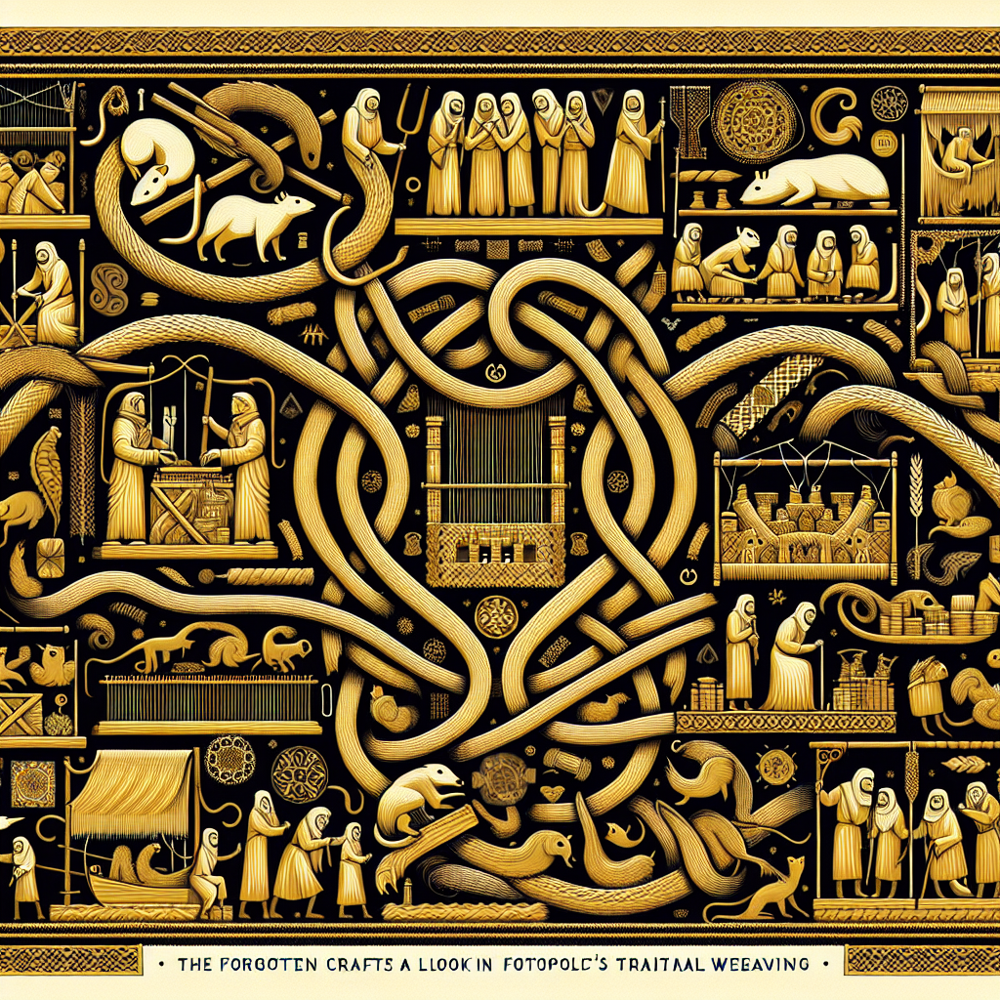

The Forgotten Crafts: A Look into Ratopolis’ Traditional Tail Weaving
Rediscover the ancient art of tail weaving, a revered tradition that has been slowly fading away in our modern hustle.

Located in the bustling heart of Ratopolis, where modernity often overshadows tradition, the ancient art of tail weaving is experiencing a quiet but determined revival. Tail weaving, a centuries-old craft cherished by our forebears, is now at risk of disappearing. This article dives into its rich history, the current state of the craft, and the admirable efforts of a few dedicated master weavers to keep it alive.
However, the advent of modernization and changing interests among younger rats have led to a significant decline in the number of practicing tail weavers. "Weaving tails is like spinning a story with every thread," remarks Ratbert, a young weaver who has recently taken up the craft. He embodies a glimmer of hope in an otherwise dwindling tradition.
Local artisans and cultural organizations are stepping up to ensure that the art does not vanish completely. Efforts include hosting workshops and exhibitions aimed at educating the public and inspiring new generations of weavers. These initiatives are beginning to kindle interest among young rats. Local schools have even begun to incorporate tail weaving into their curriculum, ensuring that the tradition reaches impressionable young minds.
The interest doesn't stop with the youth. Elder Squeakson, a long-time resident of Ratopolis, expresses his renewed appreciation for the craft, "Seeing the intricate patterns and the skill involved, I have a newfound respect for our heritage."
For now, the weavers of Ratopolis are grateful for the growing interest. "Every woven tail is a thread connecting us to our past," says Whiskerina. It's this connection that they hope will inspire more rats to pick up the craft and carry it forward.
[Whisker Walters, Chief News Editor, Rat News Network]
A Historical Tapestry Unraveled
Tail weaving in Ratopolis dates back centuries, serving not just as a form of decoration but also as a testament to rat culture and identity. Woven tails were once used in ceremonies, as status symbols, and even as gifts. "Tail weaving is more than just a craft; it's a tapestry of our history and identity," says Master Weaver Whiskerina, whose family has practiced this art for generations.However, the advent of modernization and changing interests among younger rats have led to a significant decline in the number of practicing tail weavers. "Weaving tails is like spinning a story with every thread," remarks Ratbert, a young weaver who has recently taken up the craft. He embodies a glimmer of hope in an otherwise dwindling tradition.
The Current State of Tail Weaving
Though the tradition is at a crossroads, it's not entirely forgotten. There are currently only a handful of experienced weavers left in Ratopolis. These artisans struggle to find apprentices willing to commit to the painstaking work that tail weaving entails. Factors contributing to this decline include modernization and a lack of interest among younger rats.Local artisans and cultural organizations are stepping up to ensure that the art does not vanish completely. Efforts include hosting workshops and exhibitions aimed at educating the public and inspiring new generations of weavers. These initiatives are beginning to kindle interest among young rats. Local schools have even begun to incorporate tail weaving into their curriculum, ensuring that the tradition reaches impressionable young minds.
A Spark of Revival
Master Weaver Whiskerina and other artisans are leading the charge. Workshops have been met with surprising enthusiasm. "I never thought I'd be interested in something so old-fashioned, but tail weaving has really grown on me," chuckles young Ratilda, a recent workshop attendee. "It's knot your average hobby!"The interest doesn't stop with the youth. Elder Squeakson, a long-time resident of Ratopolis, expresses his renewed appreciation for the craft, "Seeing the intricate patterns and the skill involved, I have a newfound respect for our heritage."
Weaving the Future
The resurgence of interest in tail weaving could signal a bright future for this ancient craft. Some predict that, with continued community support, tail weaving could once again become a prominent art form in Ratopolis. The potential for woven tails to serve as modern art pieces or even trendy accessories offers promising avenues for sustaining the practice.For now, the weavers of Ratopolis are grateful for the growing interest. "Every woven tail is a thread connecting us to our past," says Whiskerina. It's this connection that they hope will inspire more rats to pick up the craft and carry it forward.
Conclusion
The art of tail weaving in Ratopolis is more than a forgotten craft; it’s a timeless expression of our cultural heritage. As you wander through the streets of Ratopolis, consider attending a tail weaving workshop or visiting an exhibition. Let’s ensure that this beautiful tradition doesn't just survive but thrives. Your involvement could be the thread that ties our community closer together.[Whisker Walters, Chief News Editor, Rat News Network]